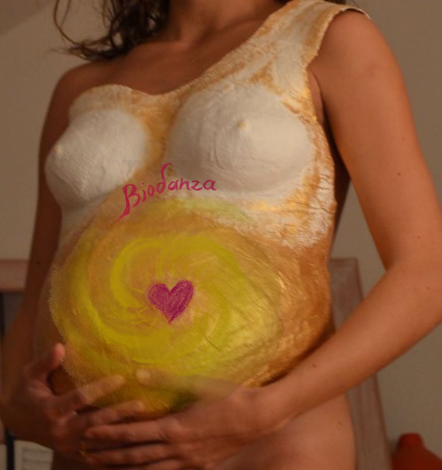
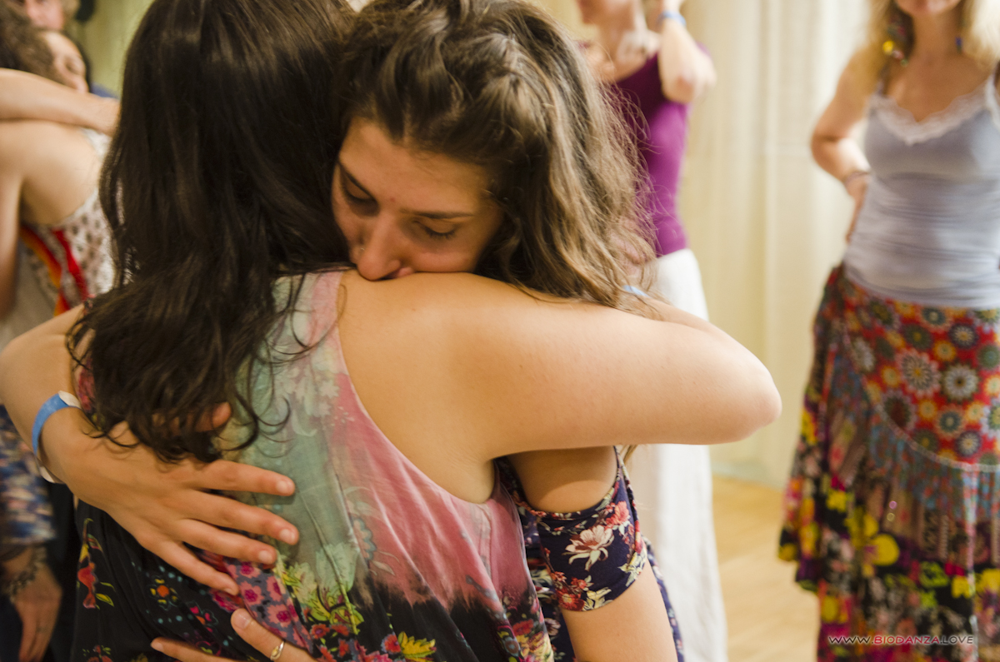
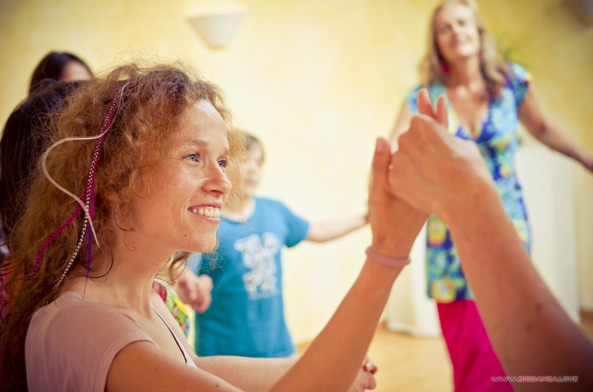

Biodanza für Schwangere
Ganzheitliche Geburtsvorbereitung durch Tanzen

Eine wunderbare Reise zu DIR und deinem Kind
Tanzen ist die uralte Kunst, große Ereignisse emotional zu bewältigen. Und doch ist es kinderleicht. Denn es bedeutet schlicht, sich authentisch auszudrücken - das was innen ist, durch natürliche Bewegungen nach außen hin zu manifestieren. Ästhetik, Sportlichkeit, spezielle Schritte oder Choreografien sind hierbei gar nicht gefragt.
Jede Schwangere kann tanzen!
Ohne Anstrengung, nur mit Freude und Leichtigkeit.
Gemeinsam mit anderen Schwangeren tanzt du in einem geschützten Rahmen sprichwörtlich durch „alle Höhen und Tiefen“ deiner Schwangerschaft - immer mit dem Fokus auf deinen sich wandelnden Körper, dein Erleben im Hier und Jetzt und den Ausdruck deiner inneren Impulse... Die Musik und das Tanzen unter liebevoller Anleitung sollen deine natürlichen Potentiale anregen und zu voller Blüte bringen.
Mit Biodanza möchte ich dir helfen, während der Geburt mit den starken Körpererfahrungen umzugehen und sie in eine kraftvolle, authentisch gelebte Erfahrung zu verwandeln.
Dabei ist es ganz egal in welcher Woche du anfängst.
Eine Geburt ist ein einzigartiges Geschehen.
So einzigartig wie du selbst.
Die besondere Musik und die Bewegungen in Biodanza werden dir dabei helfen, die für D I C H und D E I N E Geburt richtigen, essenziellen Bewegungen auf ganz natürliche, organische Weise aus dir heraus zu entwickeln
und zu genießen.
Ängste und Blockaden können den Geburtsverlauf ungünstig beeinflussen. Deshalb widmen wir uns ganz besonders dieser Thematik. Die Tänze und Übungen werden von mir sehr sorgfältig so ausgewählt, dass dein Urvertrauen in deine natürliche Fähigkeit, zu gebären, gestärkt wird. In Biodanza lernst Du Dich in Deinem ganz eigenen Rhythmus zu bewegen und ihm zu vertrauen – und damit, dich im Tanz auf ganz individuelle, natürliche Weise emotional und körperlich vorzubereiten für deine Geburt. Aber auch auf das, was danach kommt:
Dein Leben mit einem wunderbaren Wesen, deinem Kind!
Nach dem Kurs wirst du dich in deinem Körper mehr zuhause fühlen, um dadurch gestärkt und vertrauensvoller in eine selbstbestimmte Geburt starten zu können.
Ähnlich wie bei Atem-, Achtsamkeits- oder Hypnoseübungen im Yoga oder HypnoBirthing geht es in Biodanza darum, dich nach innen zu wenden – hier aber in Verbindung mit freudvoller, authentischer, natürlicher Bewegung - und in einem liebevollen, schützenden und nährenden Kreis mit anderen Frauen, die auf dem gleichen Weg sind, wie du!
Komm
mit auf die Entdeckungsreise
zu dir und deinem Kind!

Für Biodanza brauchst du keine Vorkenntnisse.
Kurse
in Basel, Freiburg und Müllheim
Ein schönes Geschenk, das du dir und deinem Kind machen kannst,
ist auch eine speziell auf deine Bedürfnisse abgestimmte
EINZELSITZUNG
Das ist eine wunderbare Gelegenheit, dich auf besonders tiefe Weise mit deinem Kind zu verbinden.
Sprich oder schreib mich einfach an!
UNSER NÄCHSTER TANZ FINDET STATT
SONNTAG, 1. JULI
von 10 – ca. 11.30 UHR
in den räumen für körper, geist und seele (mitte3)
unternehmen mitte, BASEL
Du bist herzlich willkommen in unserem Kreis!
Anmeldung
und Beratung:
Angela.Fauvel@gmx.de
/
+49–176–96
899 307

Über mich:
Von Beruf Lehrerin, tanze ich seit vielen Jahren leidenschaftlich Biodanza und bin ausgebildete Biodanzafacilitatorin (unter Supervision von Dipl.Psych. Hildegard Peñaloza von der Biodanza-Schule Freiburg).
Ich bin Mutter dreier Kinder und habe viel Erfahrung rund um (Tanz und) Schwangerschaft, (Allein- und Haus-)Geburt sowie Leben mit Kindern und Familie. Mit Freude und Sensibilität begleite ich dich liebevoll durch die Schwangerschaft und auf deinem Weg in dein Leben als Mutter.